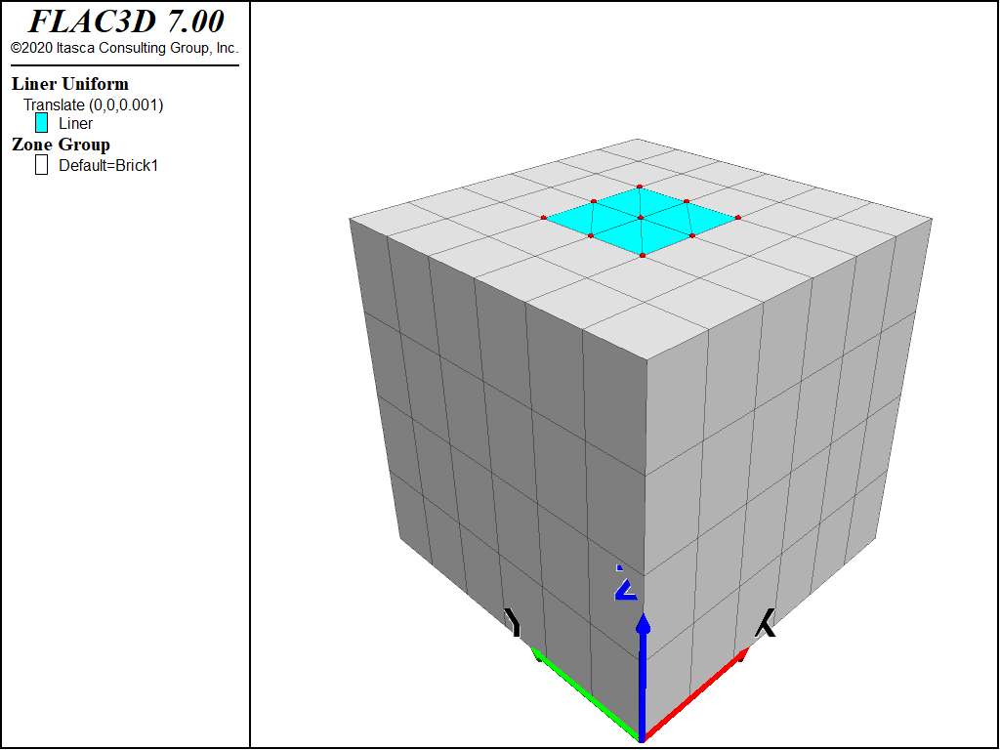
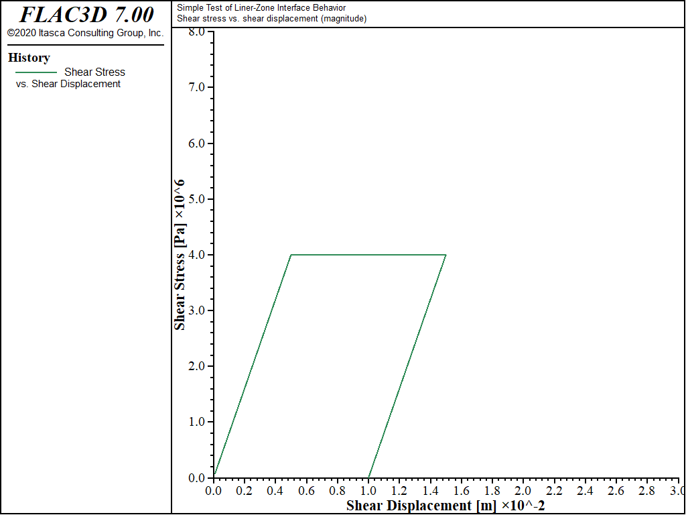
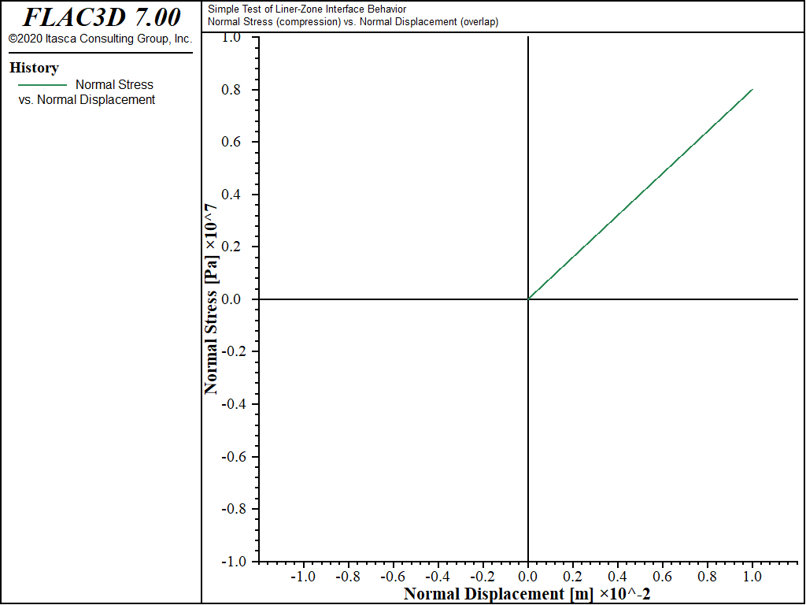
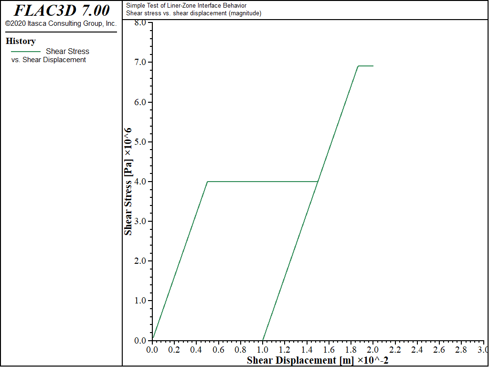
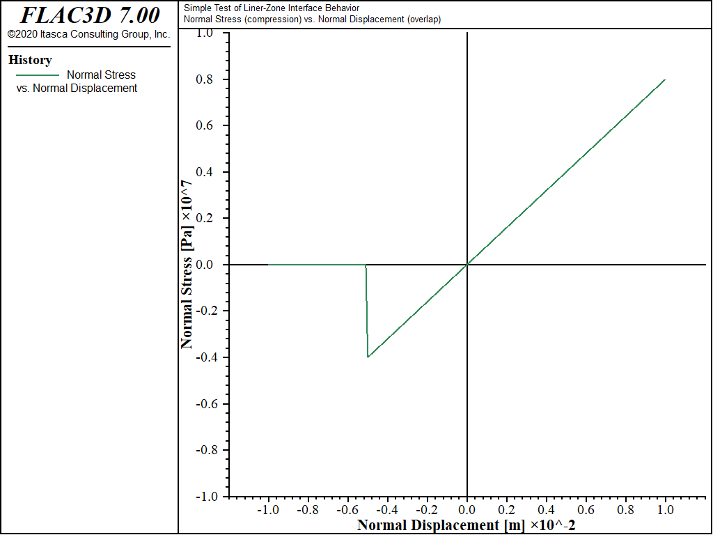
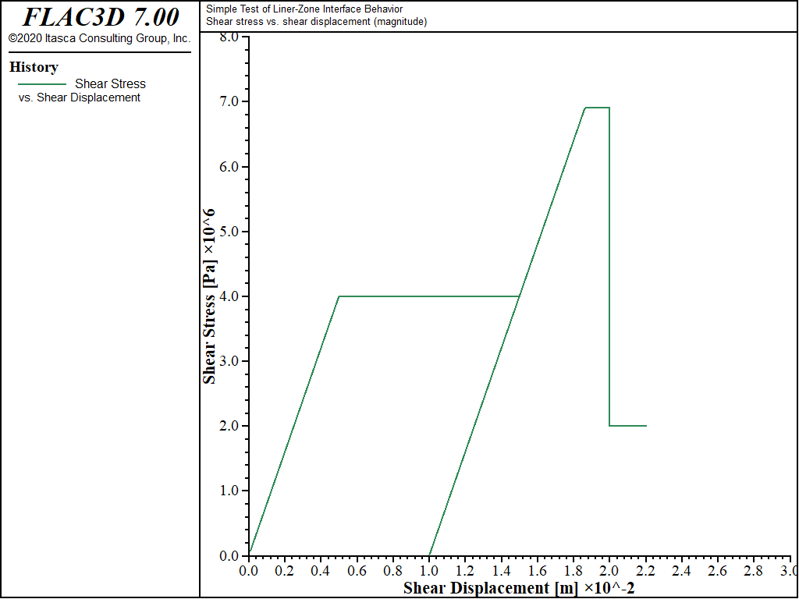
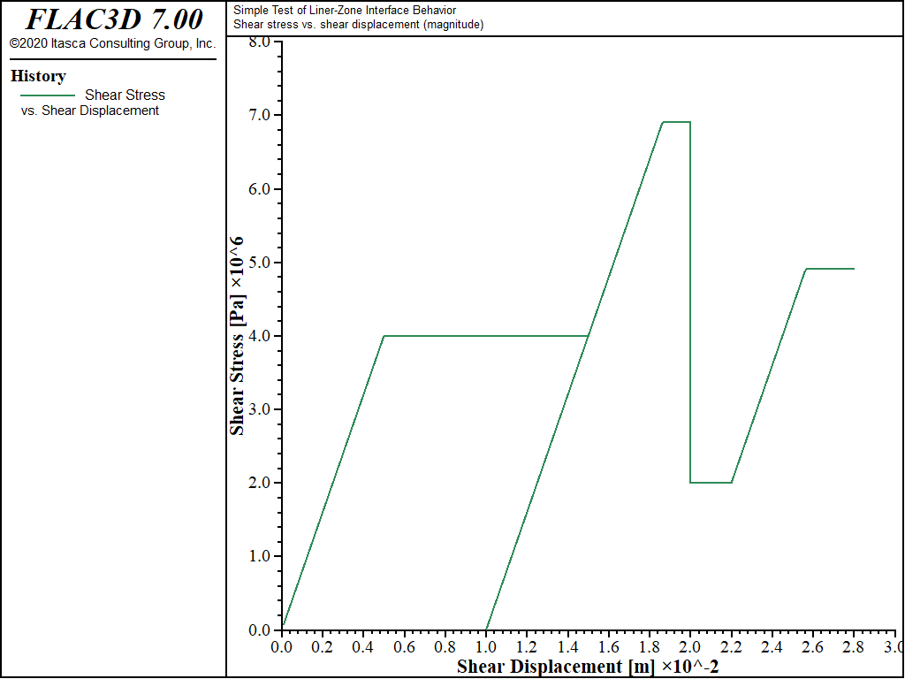

衬砌-网格单元界面特性的简单测试
问题描述
注意
本示例的工程文件可在 FLAC3D 中查看/运行。[1] 所使用的主数据文件（main data files）在本示例末尾给出。其余数据文件可在该工程中找到。
将衬砌放置在土块顶部，然后沿不同方向移动。监测并绘制其中一个衬砌耦合弹簧的法向和剪应力及位移，以展示衬砌-网格单元界面性质对系统响应的影响。
FLAC3D 模型是 1 立方米的土块，由 144 个网格单元组成，土块顶部中央有面积为 0.33 m2、由 8 个衬砌单元组成的混凝土衬砌，如图 1（Figure 1） 所示。土体被指定弹性性质（\(E\) = 15 MPa，\(\nu\) = 0.3）。衬砌材料被指定与厚 0.1 m 的混凝土衬砌相对应的性质（\(E\) = 25 GPa，\(\nu\) = 0.15，\(t\) = 0.1 m）。衬砌-网格单元界面性质（\(k_n\)、\(k_s\)、\(f_t\)、\(c\)、\(c_r\)、\(\phi\)）按如下方式指定。
接触面刚度（\(k_n\) 和 \(k_s\)）取为 8 × 108 N/m3，以确保使用衬砌刚度经验规则（the liner stiffness rule of thumb）时接触面变形很小。指定以下接触面强度性质：
| 抗拉强度（\(f_t\)） | 4 MPa |
| 黏聚力（\(c\)） | 4 MPa |
| 残余黏聚力（\(c_r\)） | 2 MPa |
| 摩擦角（\(\phi\)） | 20 degrees |
为演示衬砌-网格单元界面行为，施加以下条件。所有网格点和节点的速度完全固定。对所有节点施加相同的速度，使衬砌作为刚体运动。这些条件防止网格单元和衬砌材料内部产生应力；只有衬砌-网格单元界面弹簧被调动。监测并绘制中心耦合弹簧处的法向和剪应力及位移。在法向应力与法向位移的图中，符号约定为压缩和重叠为正（与表示法向接触面行为（normal interface behaviors）的图相对应）。在剪应力与剪切位移的图中，绘制剪应力和剪切位移的绝对值（与表示剪切接触面行为（shear interface behaviors）的图相对应）。


图 1：衬砌-网格单元界面特性简单测试的 FLAC3D 模型。
试验分六个阶段进行。每个阶段施加法向或剪切位移，另一个位移分量保持固定。各阶段所施加的位移列于 表 2（Table 2），其中正/负法向位移表示分离/重叠，沿对角线方向 (1,1,0) 的剪切运动为正。试验结果见 图 2（Figure 2） 至 图 7（Figure 7）。
| 阶段 | 法向 (mm) | 剪切 (mm) |
|---|---|---|
| 1a | 0 | +15 |
| 1b | 0 | -5 |
| 2 | -10 | 0 |
| 3 | 0 | +10 |
| 4 | +20 | 0 |
| 6a | -20 | 0 |
| 6b | 0 | +6 |
在第 1 阶段，先施加 15 mm 的正向剪切位移，再施加 5 mm 的负向剪切位移。响应如图 2（Figure 2） 所示，可与剪切接触面行为（shear interface behavior）进行比较。该图的斜率等于单位面积上的剪切耦合弹簧刚度 \(k_s\)，最大值等于黏聚力 \(c\)（因为在此阶段接触面法向应力为零）。卸载斜率与加载斜率相同。
在阶段 2 中，衬砌向下移动 10 mm。响应见 图 3（Figure 3），可与接触面法向行为（normal interface behavior）对比。该曲线的斜率等于单位面积的法向耦合弹簧刚度 \(k_n\)。该阶段接触面法向应力 \(\sigma_n\) 等于 8 MPa。在阶段 3 中再施加 10 mm 的剪切位移，响应见 图 4（Figure 4）。剪应力增大并达到最大值 6.91 MPa，该值符合以下关系式
| 其中： | \(c\) | = | 黏聚力； |
| \(\sigma_n\) | = | 接触面法向应力；以及 | |
| \(\phi\) | = | 摩擦角。 |
在第 4 阶段，将衬砌向上移动 20 mm。响应如图 5（Figure 5） 所示。当接触面法向应力达到 4 MPa 的抗拉强度 \(f_t\) 时，弹簧断裂，使接触面法向应力降至零。当衬砌拉伸破坏时，有效黏聚力变为 \(c_r\)，抗拉强度设为零。总相对法向位移继续被跟踪，以便当间隙闭合时再次形成压缩法向应力。在第 5 阶段，再施加 2 mm 的剪切位移，响应如图 6（Figure 6） 所示。峰值剪应力从 6.91 降至 2 MPa，因为接触面法向应力为零，此时使用的是残余黏聚力（residual cohesion）。在第 6 阶段，将衬砌向下移动 20 mm，然后再施加 6 mm 的剪切位移。响应如图 7（Figure 7） 所示。间隙已闭合，接触面法向应力再次为 8 MPa。峰值剪应力为 4.91 MPa，与残余黏聚力（residual cohesion）一致。


图 2：剪应力随剪切位移的变化（阶段 1 之后）。


图 3：法向应力随法向位移的变化（阶段 2 之后）。


图 4：剪应力随剪切位移的变化（阶段 3 之后）。


图 5：法向应力随法向位移的变化（阶段 4 之后）。


图 6：剪应力随剪切位移的变化（阶段 5 之后）。


图 7：剪应力随剪切位移的变化（阶段 6 之后）。
数据文件
LinerZoneInterfaceTest.dat
; 衬砌应用算例
; 衬砌与网格单元接触面行为的简单测试
model new
model large-strain off
model title 'Simple Test of Liner-Zone Interface Behavior'
; 创建土体。
zone create brick size 6,6,4 point 0 (0,0,0) point 1 (1.0,0,0) ...
point 2 (0,1.0,0) point 3 (0,0,1.0)
zone cmodel assign elastic
zone property bulk=12.5e6 shear=5.77e6 ; 土体
; 创建混凝土衬砌。
struct liner create by-zone-face range position (0.33,0.33,1) (0.66,0.66,1)
struct liner property isotropic=( 25e9, 0.15) thickness=0.1 ; 混凝土
struct liner property coupling-stiffness-normal=8e8 ...
coupling-stiffness-shear=8e8 coupling-yield-normal=4e6 ...
coupling-cohesion-shear=4e6 ...
coupling-cohesion-shear-residual=2e6 coupling-friction-shear=20.0
;
zone gridpoint fix velocity ; 完全固定所有网格单元
struct node fix velocity ; 完全固定所有节点
struct liner history name='nstr' ...
coupling-stress-normal node 3 component-id 3
struct liner history name='ndis' ...
coupling-displacement-normal node 3 component-id 3
struct liner history name='sstr' ...
coupling-stress-shear node 3 component-id 3
struct liner history name='sdis' ...
coupling-displacement-shear node 3 component-id 3
; 向衬砌施加六组法向／剪切位移。
struct mechanical damping combined-local
struct node initialize velocity (0.707e-5,0.707e-5,0) local ; 法向位移 = 0 mm
model cycle 1500 ; 剪切位移 = +15 mm
struct node initialize velocity (-0.707e-5,-0.707e-5,0) local ; 法向位移 = 0 mm
model cycle 500 ; 剪切位移 = -5 mm
model save 'stage1'
struct node initialize velocity (0,0,-1e-5) local ; 法向位移 = -10 mm
model cycle 1000 ; 剪切位移 = 0 mm
model save 'stage2'
struct node initialize velocity (0.707e-5,0.707e-5,0) local ; 法向位移 = 0 mm
model cycle 1000 ; 剪切位移 = +10 mm
model save 'stage3'
struct node initialize velocity (0,0,1e-5) local ; 法向位移 = +20 mm
model cycle 2000 ; 剪切位移 = 0 mm
model save 'stage4'
struct node initialize velocity (0.707e-5,0.707e-5,0) local ; 法向位移 = 0 mm
model cycle 200 ; 剪切位移 = +2 mm
model save 'stage5'
struct node initialize velocity (0,0,-1e-5) local ; 法向位移 = -20 mm
model cycle 2000 ; 剪切位移 = 0 mm
struct node initialize velocity (0.707e-5,0.707e-5,0) local ; 法向位移 = 0 mm
model cycle 600 ; 剪切位移 = +6 mm
model save 'stage6'
尾注
| [1] | 要在 FLAC3D 中查看该项目，请使用程序菜单。
⮡ FLAC |
| 这些内容对您有帮助吗？… | FLAC3D © 2019, Itasca | 原文更新于 2020 年 10 月 8 日 |